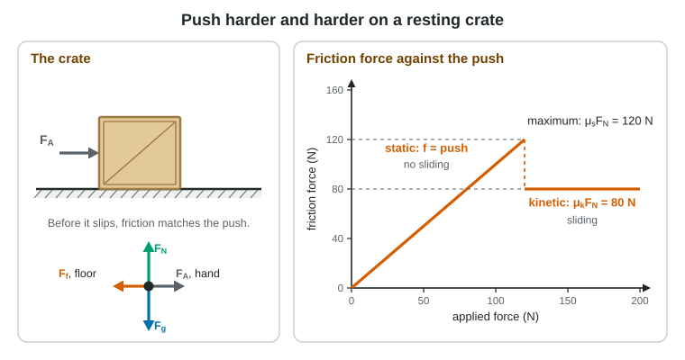

Without friction you could not walk, a car could not turn, and a book would slide off any desk that was not perfectly level. Friction is the force a surface exerts along itself, and it comes in two kinds with different rules. The exam tests the difference every year: static friction adjusts, kinetic friction does not.
Two kinds of friction

Push gently on a heavy crate resting on a floor. It does not move, so by the first law something must push back just as hard. That something is static friction: friction between surfaces that are not sliding against each other. Push harder and static friction grows to match. It can only grow so far, though. When the push exceeds its maximum, the crate breaks free and slides. Now the floor exerts kinetic friction, the friction between sliding surfaces, which is usually smaller.
Both kinds act along the surface and oppose the sliding of the two surfaces against each other (for static friction, the sliding that would happen without it). Both are proportional to the normal force: the harder the surfaces are pressed together, the more they grip.
| Static friction | Kinetic friction | |
|---|---|---|
| When | surfaces not sliding against each other | surfaces sliding |
| Size | whatever prevents slipping: 0 ≤ fs ≤ μsFN | fixed: fk = μkFN |
| Direction | opposes the sliding that would otherwise happen | opposes the sliding |
| Found from | Newton's laws (it balances or supplies what is needed) | μkFN |
| Coefficient | μs, usually larger | μk, usually smaller |
The coefficient of friction, μ (Greek "mu"), is a number with no unit that describes a particular pair of surfaces: rubber on dry concrete grips well (μ near 1), ice on ice hardly at all (μ near 0.05). In this model, friction does not depend on the area of contact or on the sliding speed. The equations sheet writes the rule as |Ff| ≤ |μFN|: an equals sign for kinetic friction and for static friction at the point of slipping, and less than otherwise.
Static friction is only as big as it needs to be
Worked example 1. A 30 kg crate rests on a level floor. It starts to slide when a horizontal push reaches 206 N, and a push of 88 N keeps it sliding at constant speed. Find μs, μk, and the friction when the push is 60 N. Use g = 9.8 m/s².
Normal force: vertical forces balance, so FN = mg = 30 kg × 9.8 m/s² = 294 N.
Start of sliding: friction is at its maximum, μsFN = 206 N, so μs = 206 N ÷ 294 N = 0.70.
Constant speed: equilibrium, so fk = 88 N and μk = 88 N ÷ 294 N = 0.30.
Push of 60 N, crate at rest: equilibrium again, so static friction is 60 N, not 206 N.
Static friction can even point along the motion. A runner's planted shoe pushes back on the track; static friction from the track pushes her forward. A box riding on a truck bed that speeds up is carried forward by static friction from the bed. Friction opposes slipping between the surfaces, not motion itself.
Find the normal force first
Every friction calculation needs FN, and FN is not always mg. Find it from the direction perpendicular to the surface, where nothing accelerates:
- Level floor, horizontal push: FN = mg.
- Pull angled upward: the rope lifts part of the weight, so FN = mg − FT sin θ, and friction is smaller.
- Ramp at angle θ: only the part of gravity perpendicular to the ramp presses into it, so FN = mg cos θ. The part along the ramp, mg sin θ, tends to slide the object down.
Worked example 2. A 12 kg crate rests on a ramp tilted 35°. Find the normal force and the static friction. Use g = 9.8 m/s².
Axes: along the ramp and perpendicular to it. The free-body diagram has three whole forces: Fg (Earth) straight down, FN (ramp) perpendicular to the ramp, fs (ramp) up the slope. Only in the equations do we split Fg into parts.
Perpendicular: FN − mg cos 35° = 0, so FN = 12 kg × 9.8 m/s² × 0.819 = 96 N.
Along the ramp: fs − mg sin 35° = 0, so fs = 12 kg × 9.8 m/s² × 0.574 = 67 N, up the slope.
As the ramp steepens, mg sin θ grows and μsmg cos θ shrinks; the crate slips when tan θ = μs.
Sliding objects slow down at μg
A box sliding across a level floor with nothing pushing it has one horizontal force, kinetic friction μkmg. Its acceleration is μkmg ÷ m = μkg. The mass cancels: a heavy box and a light box of the same material slow down at the same rate.
Common slips
Writing μsFN for static friction when the object is not about to slip. Using mg for the normal force on a ramp or with a tilted pull. Pointing friction against the velocity when it opposes slipping instead. Thinking a wider box has more friction. Forgetting that friction drops once an object starts to slide.